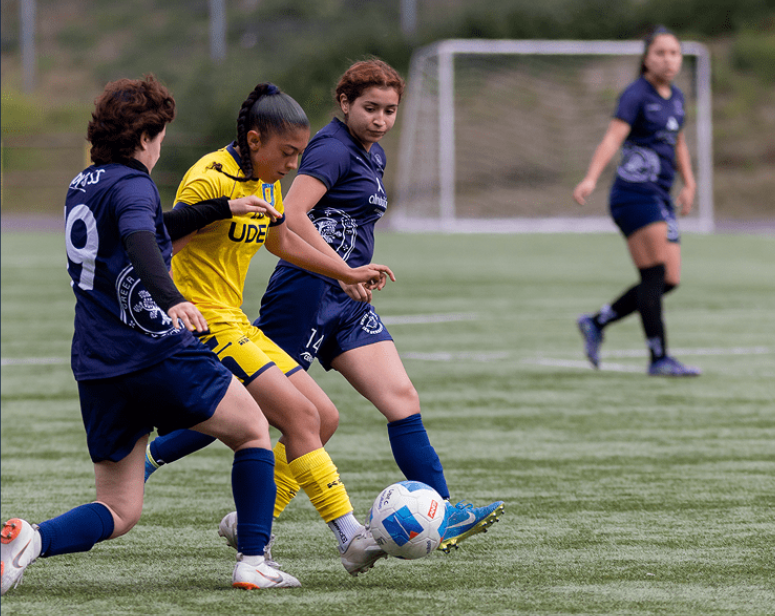

Damna Art (Instagram)
Damna Art (Instagram)
 Rediseño imagen de marca El Mercadillo Valpo (Instagram)
Rediseño imagen de marca El Mercadillo Valpo (Instagram)
 Reedición Un golpe de dados (Experiencia tipográfica-editorial)
Reedición Un golpe de dados (Experiencia tipográfica-editorial)
 Reedición Paisajes Cordilleranos (Edición Digital)
Reedición Paisajes Cordilleranos (Edición Digital)
 Pieza grafica de naturaleza (Edición Digital)
Pieza grafica de naturaleza (Edición Digital)
 Tipografía Fragile (Experiencia Tipográfica)
Tipografía Fragile (Experiencia Tipográfica)
 Tipografía creada SUMMUM grotesk (Experiencia Tipográfica)
Tipografía creada SUMMUM grotesk (Experiencia Tipográfica)
 Reedición Travesía de Amereida 1 (Experiencia editorial digital)
Reedición Travesía de Amereida 1 (Experiencia editorial digital)
Bienvenido a los registros ocultos de El Circo de Damn. Este espacio está diseñado para albergar crónicas, historias, notas de función y todo lo necesario para dar contexto a este universo.
Su servidor:
Damian Maturana, estudiante de 4to año de diseño en la Pontificia Universidad Católica de Valparaíso, he pasado principalmente por cursos de diseño gráfico y de ediciones tanto digitales como físicas, la primera me da la posibilidad de entender cierto porcentaje de contenido de código y estilos.
Tengo fortalezas en:
Y especial atención en apartados como:
Te invito a revisar esta pequeña actividad que estoy desarrollando.
Con estas cartas de navegacion de la derecha podras volver a nuestra targeta de invitacion y en un futuro ver nuevas e intrigantes experiencias en el circo.
¿Deseas enviar un mensaje a los artistas o establecer un pacto con los directores de este circo? Este es el canal abierto para comunicaciones oficiales.
Puedes encontrarnos a través de nuestras redes sociales:
Damna._.art en Instagram
Para una atención directa a:
damian.maturana.c@mail.pucv.cl
Este trabajo es netamente académico:
Se usa canción del juego River City Girls 2, "Haunt" - Megan McDuffee.
Las imágenes usadas están sacadas de Pinterest, no se encuentra un origen fiable a acreditar (se buscará y actualizará esta información).
Una lista secreta de entretenimientos, retos y proyectos lúdicos que aún aguardan en la recámara de los artistas.
Pronto se añadirán aquí los tableros y desafíos interactivos en desarrollo.
El trabajo colaborativo, sistemático y permanente en investigación y creación, realizado en la Universidad de Concepción, es una forma válida de alcanzar altos niveles de calidad y pertinencia.
Conocer más ↗Esta Unidad es la encargada de generar instancias deportivas, recreativas y de actividades masivas de integración para la formación integral y de excelencia. Su objetivo principal es entregar a los y las estudiantes las herramientas necesarias para su desarrollo integral al interior de la Universidad y ser la fuente motivadora y precursora de cambios positivos tanto en el aspecto físico como en el mental, a través de difusión o promoción de estilos de vida saludables.
Visita nuestros talleres ↗